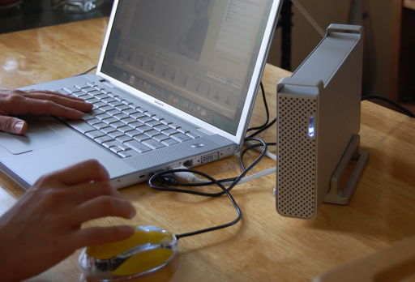

Motivation

- Access to data (axioms) in databases that are
- (Effectively) too large to load
- Computed rather than stored
- Examples
- YAGO
- Cyc (not just open and research Cyc)
- Wikipedia
- BioBike
- Axiom schemas
- Lemma generation
- Limited existing research and implementations
- Instance Store for DL
- BioBike access from SNARK
- Gerard de Melo's advance retrieval from YAGO
- FroCoS papers (to be researched)
- No general framework or standards (in TPTP!)